Mahathaya's Saga: Power, Paranoia, and Politics in the LTTE
Mahathaya's Saga: Power, Paranoia, and Politics in the LTTE
Jaffna Monitor
hellojaffnamonitor@gmail.com
34
Engineer and the Tragic Plight of
Punitham Akka
Another person central to Mahathaya's
story's brutal nexus was Manickavasagar
Mahendraraja, also known as 'Engineer.' A
talented mechanic from Punnalaikadduvan,
he was well-known in the region and once
owned a mechanic shop at the north junction
of Punnalaikadduvan. Coming from a
family of mechanics, with many relatives in
the same profession, his skill as a mechanic
and proficiency as a driver earned him the
nickname 'Engineer.'
Punnalai Kadduvan, a small village, was once
known as a haven for the LTTE. Following
the assassination of Alfred Thuraiappa, it
is believed that Prabhakaran sought refuge
here to evade arrest. Notably, this area was
the origin of prominent early LTTE members
Ragavan and Iyer. From its inception, the
LTTE had a substantial network in this area.
Engineer comes from a family with a strong
background in mechanics, many of whom are
in the same profession. His uncle, Mechanic
Bala, was a tragic figure in this context. In
1983, Bala was killed by the LTTE, who
mistakenly believed he was a spy for the Sri
Lankan army.
The circumstances surrounding Bala's alleged
betrayal are subject to varying accounts. Some
claim he was mistakenly suspected of leaking
information about early LTTE members
Ragavan and Ganeshan (Iyer) to the Sri
Lankan army, leading to his elimination by the
LTTE. Others suggest that the LTTE wrongly
identified him as the informant who disclosed
details about 'Avro' Kulam, an early associate
of Velupillai Prabhakaran. 'Avro' Kulam
became notorious for his alleged involvement
in the Air Ceylon bombing at Ratmalana in
September 1978.
Despite the tragedy of Bala's death, several
members of his family, including his son
Arivu, joined the LTTE. Arivu himself suffered
a significant injury in battle, losing a leg. He
now resides in Switzerland. Furthermore,
reliable sources within the LTTE revealed to
the Jaffna Monitor that Prabhakaran and top
LTTE leaders subsequently expressed regret
for the wrongful execution of Mechanic Bala,
acknowledging his innocence.
Mahathaya's Saga:
Power, Paranoia, and Politics in the LTTE
BY:
Kaniyan Pungundran
fzpad; G+q;Fd;wd;
Ganeshan Iyer
Raghavan
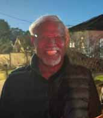
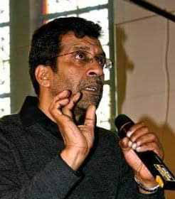
Jaffna Monitor hellojaffnamonitor@gmail.com 35 Engineer, a close ally of Mahathaya, began his association as Mahathaya's driver and eventually became a trusted confidant. According to a source who spent ten days with Mahathaya in Jaffna, Mahathaya had two close associates in the region: Engineer and Nishanthan (Kumaravelu Vignarajah) from Achchuveli. Nishanthan, an infamous spy who infiltrated the ranks of the LTTE on behalf of the Sri Lankan army, provided meticulous details about the 1985 attack on Pandithar (Sinnathurai Raveenthiran), the then Jaffna district commander of the LTTE before Kittu took charge. The story of Nishanthan and his betrayal warrants a dedicated chapter in this series. Engineer's younger brother, Lt. Vasan (Manikkavasakar Kuvinthirarasa), joined the LTTE in the 1982/83 period. He played a leading role in the Jaffna Fort attack. Tragically, he died on May 21, 1985, during The man in the checked shirt is Raheem, spokesperson for Kittu, the then Jaffna commander of the LTTE. In front of him is Arivu, son of Mechanic Bala. The one holding a camera is Kittu, with a GPMG (General Purpose Machine Gun) on the ground, while the man squatting has a LAW (Light Anti-Tank Weapon) hanging on his shoulder. Jaffna, 1986. 'Avro' Kulam
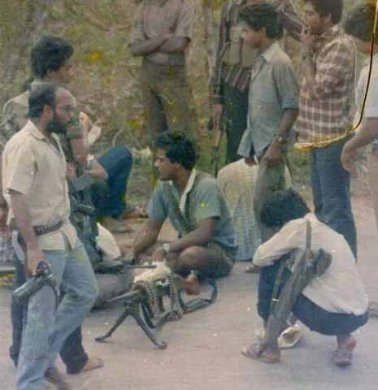
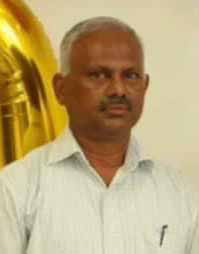
Jaffna Monitor hellojaffnamonitor@gmail.com 36 a roundup by the Sri Lankan Army in the Kurunagar area of Jaffna. One of our sources, closely associated with Engineer in the LTTE, described him as self- aggrandizing and self-promoting, noticeably deficient in significant self-discipline. Unlike other LTTE members, who frequently shaved their beards and maintained a neat and clean appearance, Engineer lacked these qualities. Our source noted that he often did not shave and did not wear neat and tidy clothes like other LTTE members. This source also observed that Engineer, a short, slightly overweight, and somewhat Prominent LTTE fighters: Lt. Col. Johny on the right, Lt. Vasan in the middle, and Maavi on the left in the mid-1980s in Jaffna. Nishanthan (Kumaravelu Vignarajah) Captain Pandithar
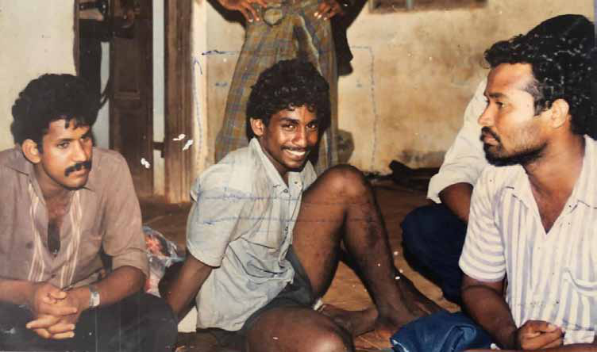
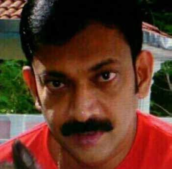
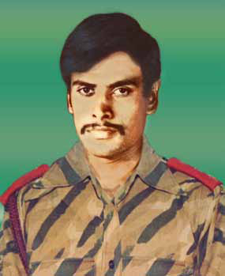
Jaffna Monitor
hellojaffnamonitor@gmail.com
37
older-looking man, often spoke impulsively
and with overconfidence, frequently
overstating his qualifications. Furthermore,
our source mentioned that Engineer was
one of the chief, albeit informal, advisors to
Mahathaya. However, our source believes that
Engineer lacked the essential qualities to fulfil
an advisory role, yet Mahathaya frequently
sought his advice. According to our source,
this situation not only highlights Engineer's
overreach within Mahathaya's faction but also
raises questions about Mahathaya's judgment
in selecting his close allies.
Engineer sustained a severe injury in an
operation at Tellippalai, leading to the loss
of a leg. To acquire a prosthetic limb, the
Jaipur foot, he travelled to India by country
boat. Following Rajiv Gandhi's assassination,
Engineer was arrested and imprisoned in
India. Few Reports indicate that during
his incarceration, he was approached and
eventually convinced by the Indian intelligence
wing to work for them.
One day, Engineer unexpectedly reappeared
in Jaffna. He had entered Sri Lanka via
Katunayake Airport and subsequently travelled
by road to Jaffna. His unimpeded journey
raised suspicions with Pottu Amman, the ever-
paranoid LTTE intelligence wing chief. Pottu
Amman speculated that Engineer, a senior
LTTE member distinguishable by his Jaipur
foot, could not have successfully travelled
through the high-security zones of Katunayake
Airport, Colombo, and Vavuniya without
arousing any suspicion. Consequently, under
the directive of Pottu Amman, the LTTE's
intelligence wing arrested him.
There are two differing theories about
Engineer. One group of former high-ranking
LTTE officers, who spoke with the Jaffna
Monitor, believes that Engineer was indeed a
mole for RAW (Research and Analysis Wing,
India's foreign intelligence agency). However,
another faction of former LTTE leaders holds
the opposite view, denying that he was a mole.
Those who believe Engineer was a RAW mole
are divided into two subsets. The first group
contends that he returned to Sri Lanka from
India with critical coup information from
RAW. This information allegedly involved
Prabhakaran with his deputy Mahathaya.
Seelan (Charles Lucas Anthony)
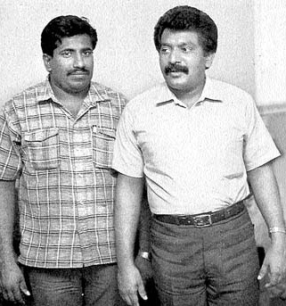
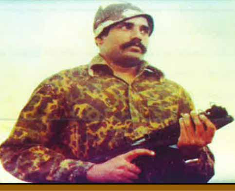
Jaffna Monitor hellojaffnamonitor@gmail.com 38 a plan to eliminate Prabhakaran and install Mahathaya as the LTTE leader, a plot which Engineer supposedly relayed to Mahathaya, implicating him in the conspiracy. In contrast, the second set of sources, who also believe Engineer was a RAW mole, disputes this claim. They assert that while Engineer did become a RAW informant, he neither disclosed RAW's agenda to Mahathaya nor was Mahathaya agreeable to any plan proposed by RAW. Another set of sources assert that Engineer was not a mole for RAW. Supporting this view is a former prominent LTTE member who wishes to remain unnamed and maintains that it was feasible for LTTE members to travel by flight via Katunayake Airport and safely reach their destinations. To illustrate, he refers to an incident from 1982 involving Seelan (Charles Lucas Anthony), the then-military chief of the LTTE. Seelan accidentally shot himself in the chest while handling a gun in the presence of Nirmala and Nithiyanathan, who were LTTE supporters at the time. Gravely injured, Seelan urgently required medical attention. Nithiyanathan successfully transported Seelan to India through Katunayake Airport despite his severe chest wound. Furthermore, this source argues that Engineer was not a widely recognized figure and did not appear to be a typical fighter. He mentioned that Engineer looked more mature to be a fighter and could have traveled through the airport to LTTE-controlled areas without arousing suspicion. This viewpoint challenges Punitham Akka
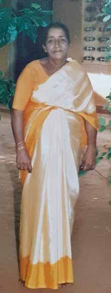
Jaffna Monitor hellojaffnamonitor@gmail.com 39 the idea that Engineer was a RAW mole, suggesting that his passage through high- security zones might not have been as extraordinary or suspicious as Pottu Amman perceived. Punitham Akka Engineer's mother, Punithavathi (Manickavasagar Punithavathi), was a beloved figure in and around Punnai Kattuvan, affectionately known as 'Punitham Akka' and 'Punitham Amma'. To many, she was 'tPuj;jha;' (meaning 'Brave Mother'), a term of deep respect and love used by everyone from Prabhakaran to the regular LTTE cadres. She wasn't just an early supporter of the LTTE; she was a maternal figure who opened her heart and home to the fighters, treating them as her own children. This profound care and compassion earned her their unwavering reverence and love, making her a true symbol of strength and nurturing in their eyes. Her home was a sanctuary for the LTTE, always open and welcoming to fighters and supporters. In a heartfelt account to the Jaffna Monitor, one former LTTE leader shared how her house served as a refuge, a safe haven available around the clock. He fondly recalled arriving at her home with his fighters in the dead of night. Without hesitation, Punitham Akka would begin preparing puttu and a special Jaffna-style omelette. The distinctive aroma of her omelette, made with gingelly oil, remains etched in his memory, evoking deep feelings of warmth, comfort, and a profound sense of home. Yet, as he reminisces, these warm memories are also tinged with immense guilt. He cannot forget the many unpleasant things that befell her after her son's arrest. Despite being a senior member of the LTTE, he had to witness all these events in silence, unable to raise his voice, like a mute spectator. The love and care she showed them came at a great personal cost, and this bittersweet realization haunts him, casting a shadow over the fond memories of her unwavering hospitality and kindness. Another former high-level officer of the LTTE disclosed to the Jaffna Monitor that upon Prabhakaran's return from India to Sri Lanka at the beginning of 1987, one of his first visits was to Punitham Akka's house. This highlights the deep affection Prabhakaran had for her. During this visit, he said that Prabhakaran took photos with her, as well as with the mother of another loyal supporter, Thadi (Beard) Mohan Mama. All these individuals hailed from Punnalaikadduvan, a village that had provided crucial support to Prabhakaran when he most needed it. It's vital to recall that on July 23, 1983, the LTTE orchestrated an ambush on the Four Four Bravo patrol, an event that precipitated the Thirunelveli massacre and the Black July riots, signaling the start of the Sri Lankan Civil War. Following this, Prabhakaran fled to India and remained there for over three years before returning to Sri Lanka in early 1987. A high-level LTTE source revealed to the Jaffna Monitor that when top LTTE commanders, including Pulenthi Amman (then the Trincomalee commander of the LTTE), visited Jaffna, they would often stay at Punitham Akka's house. He described how, during that tumultuous time, the atmosphere in Jaffna was largely supportive of the LTTE and other militant groups. However, Punitham Akka stood out not just for her words of encouragement but for her fearless actions. He emphasized, "At that time, when we were fighting against the Sinhalese chauvinistic
Jaffna Monitor hellojaffnamonitor@gmail.com 40 government, what we needed was action, not words. Punitham Akka gave us that." Her home became a haven, her courage a beacon. She didn't just speak of support; she embodied it, risking everything for the cause she believed in. This unwavering dedication and tangible support earned her the profound respect and admiration of the LTTE commanders. Her bravery and selflessness left an indelible mark on those who fought alongside her, making her a true heroine in their eyes. Even after many years, these LTTE leaders and fighters exude the same sentiment towards Punitham Akka. In our conversations with former LTTE fighters and leaders, we at the Jaffna Monitor can still feel and understand the deep respect and admiration they hold for her. She was one of the very few women who personally visited the Tigers' sentries, bringing not just food and tea, but warmth and comfort. Our source emphasized that she didn't just offer food; she prepared delicious meals infused with a mother's care and love. During the tense period of the Indian Peace Keeping Force (IPKF), when Prabhakaran retreated to the secluded Niththikaikulam in the Mulaitivu district, Punitham Akka braved the dangers to visit him. She was among the very few who reached this secretive location, staying by his side, even in the darkest times. Her presence brought a sense of home and hope to the fighters who were secluded in the Niththikaikulam forest, a former LTTE fighter who was present at Niththikaikulam told the Jaffna Monitor. Another source revealed that she even nursed Prabhakaran's children, Charles Antony and Thuvaraga, though yet another source contests this claim. However, both sources agreed in their conversation with the Jaffna Monitor that Punitham Akka took care of Mahathaya's children. Another former LTTE leader relayed to the Jaffna Monitor that in 1986, Mahathaya founded an orphanage in the Manipai area of Jaffna, close to the Velakkai Pillaiyar Temple. He appointed Punitham Akka to oversee the orphanage, which provided shelter to around 25-30 young girls. Her care for these girls went beyond mere duty; she treated each child with deep maternal affection as if they were her own. This former LTTE leader told the Jaffna Monitor that Punitham Akka's nurturing spirit transformed the orphanage into a sanctuary of love and security. Each girl found a mother in her, feeling cherished and protected amidst the chaos of their surroundings. Credible sources say that this orphanage later became the precursor to Prabhakaran's dream project, Sencholai, where the LTTE supremo cared for and nurtured hundreds of war orphans. It is said to be the project closest to his heart. Even today, many women who grew up in the orphanage hold Punitham Akka in the highest regard, cherishing her as their Godmother. Her legacy of compassion, strength, and maternal love continues to resonate deeply within the hearts of these women, some of whom the Jaffna Monitor has had the opportunity to meet and talk with. These women fondly recall the warmth and care they received, often describing Punitham Akka as a guiding light during their most vulnerable times. Her influence and the love she bestowed upon them have left an indelible mark, shaping their lives and nurturing a spirit of resilience and hope. After her son Engineer's arrest by the LTTE, Punitham Akka's revered status as the 'Brave Mother' began to wane. Locals and villagers
Jaffna Monitor hellojaffnamonitor@gmail.com 41 grew hesitant and afraid to interact with her or her family. Desperate for her son's release, she visited every LTTE camp, pleading with the leaders. She begged and cried before every LTTE leader who had once eaten from her hands, imploring them for her son's release or at least a chance to see him. She waited in front of the camps for days and nights, hoping for a glimpse of her son. Despite her persistent efforts, the LTTE leadership refused her pleas. She spent years waiting outside the LTTE camps, clinging to the hope of being reunited with her son. The fighters inside the camp recounted harrowing accounts of her waiting for hours in the scorching sun, hoping for an update about her son. One of the fighters, who had once enjoyed her soulful meals, expressed his regret to the Jaffna Monitor. He said, "At that time itself, I felt sad and guilty, but you know, in the LTTE's structure, you should listen to our leadership even if our conscience says it's wrong." A former LTTE leader drew a poignant parallel between Punitham Akka's situation, waiting outside the LTTE camp for her son's release, and that of Tamil mothers who waited in front of army camps for the release of their children. This former LTTE leader admitted to the Jaffna Monitor, with a sense of regret, that their organization's behaviour was, in this respect, similar to that of the Sri Lankan army. The fate of Engineer remains unknown to this day. It is widely believed that he was executed by the LTTE. Some speculate that he may have died during interrogation due to brutal torture, but the truth remains a mystery. A former LTTE leader, who once held a prominent position within the organization, confided to the Jaffna Monitor his belief in Engineer's innocence. He revealed that the LTTE's intelligence wing had arrested Brigadier Theepan (Velayuthapillai Baheerathakumar), a one-time close ally of Mahathaya who later became the commander of the Northern Front, and Colonel Jeyam, a notable LTTE leader famous for his integrity and bravery, in connection with the Mahathaya case. Both were subjected to unimaginable torture. Their toenails were removed by Pottu Amman's brutal torture team, who were highly motivated, believing they were dealing with traitors to Tamil Eelam and Annan (Prabhakaran). Despite this, they were eventually released and proved their loyalty by fighting for the LTTE until their final days. Brigadier Theepan died fighting in the infamous Battle of Aanandapuram in Iranaipalai. Although the LTTE leadership ordered him to evacuate the war zone and move to the Mullivaikal area— the last area that remained for the LTTE— Punitham Akka
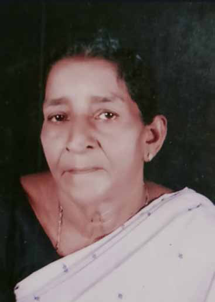
Jaffna Monitor hellojaffnamonitor@gmail.com 42 Theepan refused to leave his fighters and died on April 4. Similarly, Colonel Jeyam died on May 17. Our source pointed out that Theepan and Jeyam might have been eliminated if they had not written a secret letter to Prabhakaran through his bodyguard, declaring their innocence and affirming their unwavering loyalty to Annan (Prabhakaran). Moved by their plea, Prabhakaran formed a new investigative team that eventually found them innocent. Our sources say that while Theepan and Jeyam were found innocent and released, hundreds of innocent LTTE fighters who had taken up arms for the Tamil cause were not so lucky. They ended up being killed due to the paranoia and political maneuvers of the LTTE's intelligence wing chief, Pottu Amman. He also shared a gripping story about a fighter who had been captured and brutally tortured by the LTTE's intelligence wing. After his release, this fighter reportedly confronted Pottu Amman, saying, "You suspected that we were ensnared in the web of Indian intelligence and acted as agents of RAW. But, in reality, it is you who are caught in their trap and acted as the RAW agent." His close friend, a former LTTE fighter from Mahathaya's faction, later expanded on this topic in a conversation with the Jaffna Monitor. He explained that RAW intended to incite self- destruction within the LTTE through internal conflicts. He elaborated that Pottu Amman, entangled in this brutal nexus, inadvertently advanced RAW's objective. By killing hundreds of fighters under the suspicion that they were RAW agents, Pottu Amman, in effect, significantly aided RAW's strategy to destabilize the LTTE from within. While sharing his views, similar to many former LTTE fighters and leaders, he used strong, unparliamentary language to describe Pottu Amman and his handling of Mahathaya's case. However, he also shared a sentiment common among many ex-LTTE members regarding Prabhakaran, saying, 'mz;zd; ghyk; mtUf;F nghl;ldpz;l tpisahl;Lfs; njupahJ,' which translates to 'Poor Annan (Prabhakaran). He doesn't know the games of Pottu Amman.' This reflects a sense of empathy for Prabhakaran, suggesting a belief that he was unaware of the manipulative tactics employed by Pottu Amman. Another LTTE leader who held a prominent position shared a perspective with us that resonated with a section of former LTTE fighters. "Annan (Prabhakaran) was considered the de facto god," he said. "There was a belief that even a dog couldn't go to shit in the LTTE-held area without Annan's knowledge. So how, then," he argued, "did these many killings happen in the name of destroying traitors without Annan knowing? How could Pottu Amman alone orchestrate these many killings? This is rubbish." He continued, "While, of course, Pottan (Pottu Amman) played his own manipulative games, it's compulsory to acknowledge the painful truth. While I still respect Annan (Prabhakaran) immensely, this whole mess— Annan bears a large part of the responsibility. Annan's paranoia and his philosophy of 'kill the person who even thought of killing you in their dreams' ignited this whole mess. He can't just escape blame," he concluded. Punitham Akka passed away in March 2021, all alone. She had given birth to five children, but none were by her side when she took her